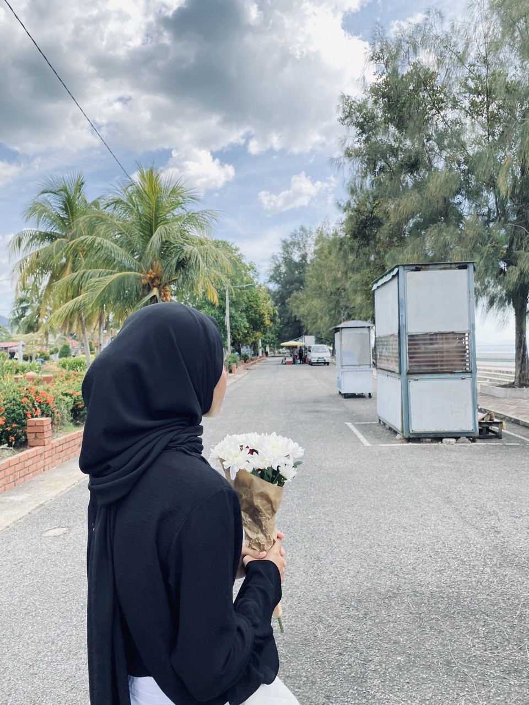
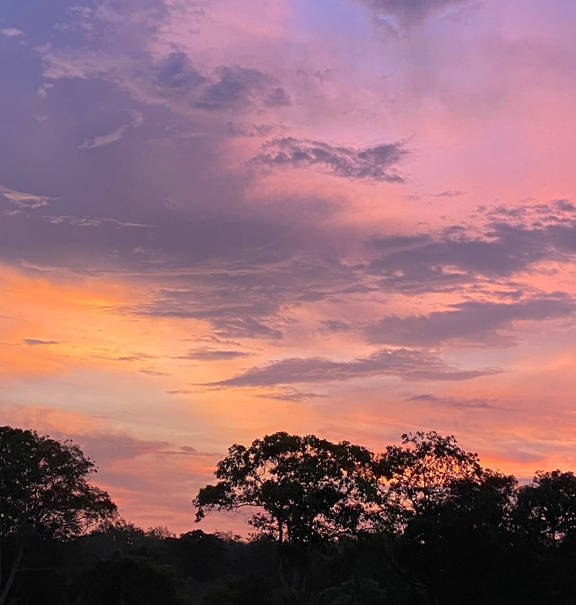
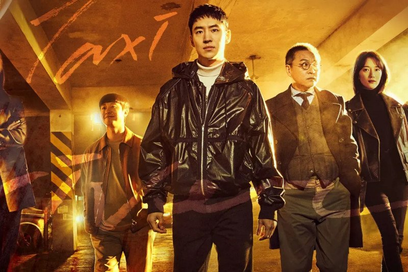
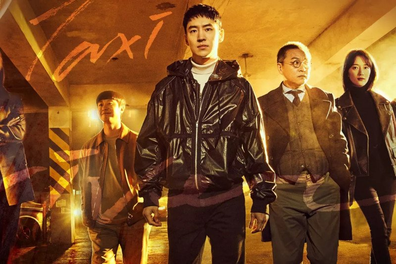

|  | ||
| Name | Wan Hamidah Bt Wan Hassan Basri | |
|---|---|---|
| Age | 21 Years old | |
| Lives | Kuala Kangsar, Perak | |
| Siblings | Youngest from 6 siblings | |
| Hobby | Watch kdrama | |
Get to know me more !
For your information, i love to watch sunsets and like to go to beach. Sunset is my only one theraphy when i am feeling sad because it brings peace to me. Besides, i am an introvert person and right now i am trying my best to be more extrovert.
During my ample time, i usually watch kdrama. I began to watch kdrama since i was 13 years old. Watching kdrama is also give benefits to me in english. Also, watching kdrama helps me in moral values.
Here are some of my sunsets pictures that i took ~

These are some of my favourite kdrama. Enjoy! Click the image to see the trailer
 
